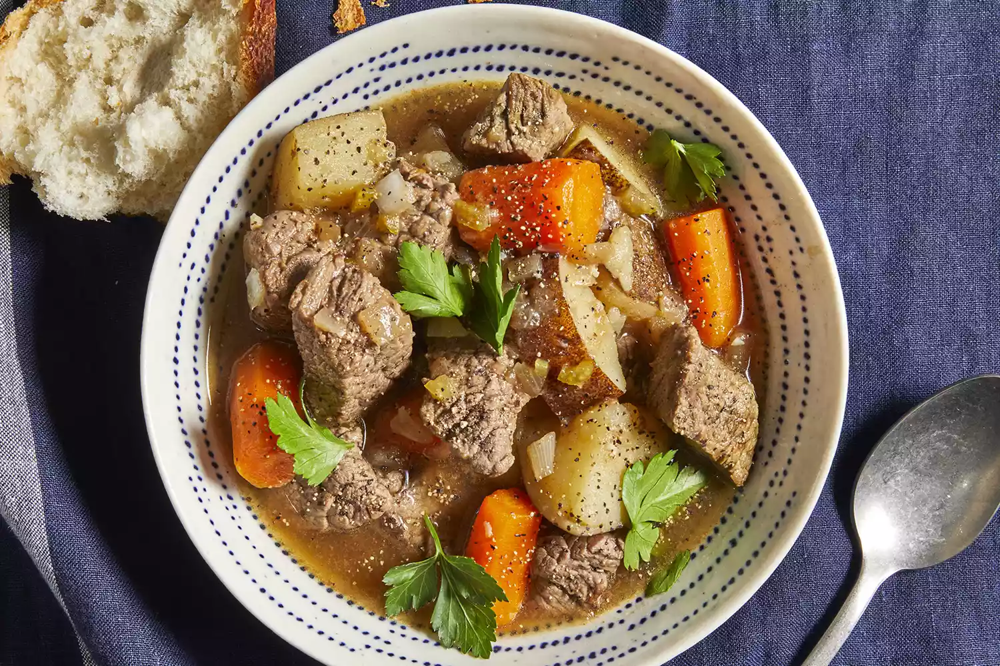

This slow cooker beef stew is the perfect low maintenance meal
for chilly fall and winter nights. Full of cozy flavor and hearty
ingredients, this beef stew recipe will warm you up from the inside out.